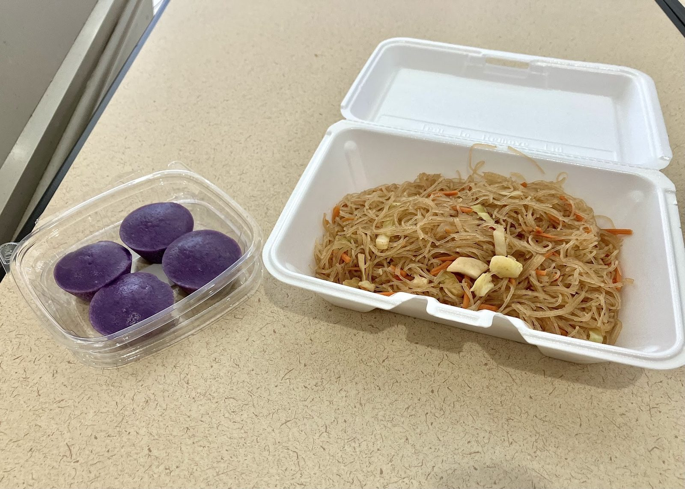

Sisig and savory plates
Sizzling, savory sisig with crispy edges, served hot from the truck.
Sisig, pancit, pork adobo tacos and ube rice cakes from a family that feels like home.

Where to find us
2366 W Rappel Ave, Bloomington, IN 47404
Mon ClosedTue ClosedWed ClosedThu ClosedFri 12–8 PMSat 8 AM–1 PMSun Closed
DirectionsFamily-run food truck
Come hungry
Find us at the Farmers Market or College Mall popup. Call ahead for catering.
On the menu
Hot from the truck.
Sizzling, savory sisig with crispy edges, served hot from the truck.

Light, fragrant pancit bihon, a veggie pancit, and skewers with fried rolls and dipping sauce.

A small pork adobo taco on a toasted fluffy tortilla with salsa, and ube rice cakes for dessert.
4.8 ★ · 24 Google reviews
Before my trip, I searched high and low for the best Filipino food in the area, and I’m so glad I found this food truck. Let me tell you: they did not disappoint. I ordered the Sisig and Pancit Bihon, and both were absolutely phenomenal. The sisig was sizzling, savory, and perfectly crispy in all the right places, packed with bold flavor and just the right hint of spice.
We found them on a Saturday morning at the Farmers Market and let me tell you this - one of the BEST TACOS I have ever had (and I've had my share). We were in Bloomington for 5 days with the sole goal of trying a different variety of international foods and this taco ranks in my top 3 things I ate. They were extremely friendly as well with explaining their menu.
A friend recommended this place, and I’m so glad I tried it. I was away from home and craving Filipino food during the Christmas holidays, so I called Maria, who kindly prepared two platters for me. The food was ready on time, neatly packaged, and I couldn’t wait to get it home. It was absolutely delicious, my whole family loved it, there wasn’t anything left on our plates. We’ll definitely be back for more! ⭐⭐⭐⭐⭐
Meet the crew
Authentic Filipino food, with a hand-lettered chalkboard out front. Find the crew at the Farmers Market and a College Mall popup.
Family-run. Call ahead and your order is ready on time, neatly packed.